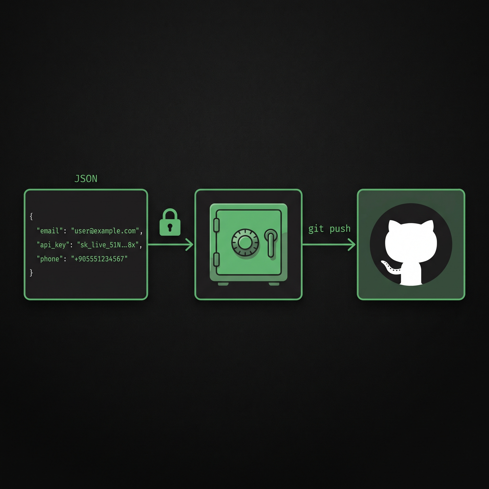

SealBox finds the passwords, API keys and personal data in your project, pulls them out of your files and locks them in an encrypted vault. Claude Code, Copilot or Cursor can read your files and still see no secrets. Your program only gets them at runtime, after you approve.
Get SealBox
The engine comes from PyPI, the editor extension from the VS Code Marketplace or Open VSX. Both are built from the same GitHub repo and share one version number: 0.3.0.
The engine and the sealbox command. Python 3.12+ on Windows, macOS and Linux.
Squiggles, quick fixes, hovers and Run with Vault inside VS Code. Installs the engine for you if it's missing.
Install →The same extension for Cursor, Windsurf, VSCodium and other VS Code–based editors.
open-vsx.org →Source code, releases with the .whl and .vsix files attached, issues and discussions.
$ pipx install sealbox # the engine $ code --install-extension gokhanozdemir.sealbox # VS Code # Cursor / Windsurf / VSCodium: Extensions → search "SealBox" (served from Open VSX)
The problem
When you ask an agent to "fix this bug", it opens files in your project and sends their contents to a model.
A password in .env or hard-coded in the source has left your machine at that moment.
.gitignore doesn't stop it, because the agent reads the file straight from disk.
import os DB_HOST = "db.internal" DB_PASSWORD = "Pr0d-Sup3r-S3cret!" ADMIN_EMAIL = "jane.doe@company.com" OWNER_TCKN = "10000000146" API_KEY = "sk_live_51N…8x" def connect(): # password: Pr0d-Sup3r-S3cret! return f"postgres://admin:{DB_PASSWORD}@…"
When an agent reads this file, 4 secrets and 1 piece of personal data go to the model.
import os DB_HOST = "db.internal" DB_PASSWORD = os.environ["DB_PASSWORD"] ADMIN_EMAIL = "__SECURE_EMAIL_8f2c…__" OWNER_TCKN = "__SECURE_TCKN_103d…__" API_KEY = os.environ["API_KEY"] def connect(): # password: __SECURE_PASSWORD_2cea…__ return f"postgres://admin:{DB_PASSWORD}@…"
The code runs the same way, but there are no secrets on disk. The values sit encrypted in .sealbox/project.vault.
How it works
SealBox isn't a proxy sitting in between. It removes secrets from your files for good. No matter which agent, editor or language you use, there is nothing left on disk to read.
Rules and validators find passwords, tokens, API keys, emails, Turkish national IDs (TCKN), IBANs and phone numbers. sealbox seal --check reports without touching anything.
Secrets move into the AES-256-GCM vault. The code keeps os.environ["X"] / process.env.X / System.getenv("X"), and personal data turns into a __SECURE_..__ placeholder.
sealbox exec -- python app.py opens an approval window first. Secrets go only to that run, as environment variables, and any secret in the output is printed as [REDACTED:..].
The vault is encrypted, so it can live in the repo. It reaches your team with git push, and only the GitHub accounts on the team can open it.

$ sealbox seal --check .env → .env.sealed: 1 value(s) will move to the vault (DB_PASSWORD) 3 file(s) scanned (0.0 s). There are unredacted secrets on disk. Run 'sealbox seal'.
Features
One command-line tool and its editor extension. No cloud account, no server, no subscription.
Regex rules plus Luhn, IBAN mod-97, the TCKN checksum and entropy checks keep false alarms down.
.sealbox/project.vault, AES-256-GCM. The key isn't on disk; it lives in your OS credential store.
.env supportSecret lines move into the vault and .env is deleted. A .env.sealed with only placeholders stays in its place.
There's deliberately no flag to skip it. Your program reaches the secrets only after you click "Allow".
If a known secret shows up in your program's output or logs, it's printed as [REDACTED:..].
Code is rewritten to the language's own environment-variable lookup. JSON/YAML/TOML configs are redacted and reported.
A copy locked to your teammate's SSH key on GitHub is created. No extra password to share.
Reopens the vault if your machine is wiped. Optionally split into 3 shares, any 2 of which are enough.
Team sharing
The vault sits encrypted in the repo. When you run sealbox team add teammate, SealBox
fetches your teammate's public SSH key from github.com/teammate.keys and writes a copy of
the vault key, locked just for them, into team.json.
After git pull, the vault opens with their own SSH key.
--owner, team promote.team remove the old member can't open the new vault, and the values they may have seen are listed.Values never cross the network in plain text; only encrypted files go into the repo.
Safe on GitHub
Your secrets travel through GitHub only as encrypted files. Each teammate's copy of the key is locked with their own GitHub SSH key, so even a leaked repo is still a locked box.
One ed25519 key per person, with a passphrase. SealBox refuses keys without one, because any program on the machine, agents included, could read them.
Paste the public half (id_ed25519.pub) under GitHub → Settings → SSH keys. It's public by design: anyone can see it at github.com/you.keys.
team add fetches that public key and locks a copy of the vault key with it into team.json. Only the matching private key opens it, and that never leaves their computer.
git push sends only encrypted files. After git pull, the first run asks for the teammate's SSH passphrase once; then the key is cached in their OS credential store.
$ ssh-keygen -t ed25519 # set a passphrase $ gh ssh-key add ~/.ssh/id_ed25519.pub # or: GitHub settings $ sealbox team init --github my-name $ sealbox team add teammate $ git add .sealbox && git commit -m "vault" && git push
Someone with push access but no key can't read a value, or add a fake member to team.json.
Cleaning a file doesn't clean old commits. sealbox history searches every commit for vault values and their encodings, and reports the name, commit and file, never the value. Pushed ones are marked: rotate those.
sealbox hook install stops a commit that contains a vault value and points to file:line. Everyone installs it on their own machine; it isn't committed.
Every version is tested by GitHub Actions, then published to PyPI with trusted publishing, so no API token is stored in GitHub. The extension goes to the Marketplace and Open VSX only after PyPI succeeds.
Recovery
Windows got reset, you bought a new laptop, or your profile broke. If the vault key lived in only one place, the vault would stay locked forever. In SealBox the vault key has several locks. If one is gone, you open it with another.
recovery setup: a 128-bit recovery code. Shown only in a window, never printed to the terminal.recovery shares: splits the code into 3 shares (Shamir). Any 2 are enough.recovery export: a recovery kit for a USB stick or the cloud. Useless without the code.recovery restore: brings the key back with the code, 2 shares, or the kit.Envelope encryption: a single vault key (DEK), stored under several locks.
VS Code extension
The extension is the sealbox command's remote control in your editor. It underlines exposed secrets in yellow, moves them to the vault with a lightbulb, and reveals values on hover after you approve.
Files are scanned on open and save, and secrets get a yellow squiggle.
Lightbulb → "Move this file's secrets into the vault".
An approved "Show value" on any __SECURE_..__ or os.environ["X"].
Shows how many secrets are in the vault and how many people share it, and warns when there's no recovery backup.
Starts your program in the terminal with sealbox exec. Suggests it when a plain run fails with KeyError.
Set up a team, add a @user, create a recovery code, or reopen with a kit, all from the menu.
Why SealBox?
Keeping secrets in .env and adding it to .gitignore protects you from git. But today there's also an AI agent reading your files.
| Hard-coded secret | .env + .gitignore | SealBox | |
|---|---|---|---|
| Does the agent see the secret when it reads the file? | Yes | Yes, the file is plain on disk | No, no secrets on disk |
| Finds secrets by itself? | No | No | Yes, in code, config files and .env |
| Warns about a forgotten exposed secret? | No | No | Yes, seal --check, CI and editor warnings |
| Sharing with the team | Plain in the repo | By hand, over chat or email | git push, with GitHub SSH keys |
| If the key is lost | — | If the file's gone, it's gone | Recovery code, 2-of-3 shares, kit |
| If a secret leaks into program output | Visible | Visible | Printed as [REDACTED:..] |
| Personal data (national ID, email, IBAN) | Plain | Plain | Redacted, handed over at runtime if needed |
| A secret committed before | Stays in history | Stays in history | sealbox history finds it; the commit hook stops the next one |
Honest limits: regex can't catch every secret, and a deliberately malicious local program could try to read the credential store. Details in the docs.
Resources
Step-by-step guides for newcomers. The docs list every option of every command.
Getting started
Run these in your project folder. Every step tells you the next one, and sealbox status is there whenever you get stuck.
Install the tool, then let init look at your project. It changes no files and lists what to do next.
$ pip install sealbox $ cd my-project $ sealbox init
Passwords and keys move into the encrypted vault; your code reads them from environment variables instead.
Seal your first project →$ sealbox seal --check # look first $ sealbox seal
A spare key for the day Windows gets reset. Shown once, in a window; never in the terminal.
If you lose the key →$ sealbox recovery setup $ sealbox recovery shares # optional
Your program gets the secrets only for this run, after you click Allow. Commit the vault and push it to your team.
Run with the vault →$ sealbox exec -- python app.py $ git add .sealbox && git commit -m "vault"
All you need is Python 3.12+. Windows, macOS and Linux, in English or Turkish.